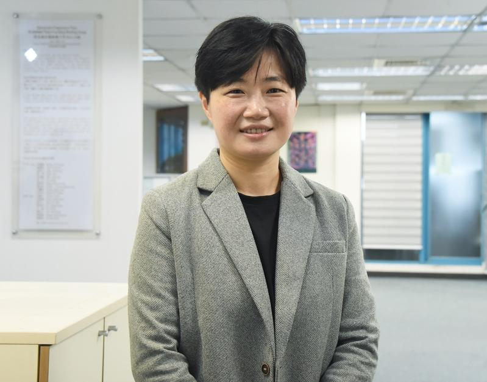

台总统府今发布总统令，任命民进党副秘书长杨懿珊为驻美公使（副代表）。
台外交部表示，新任驻美副代表杨懿珊为英国伦敦大学皇家哈洛威学院国际关系硕士，曾任民进党代理秘书长、副秘书长、文化部专门委员、台中市文化局主任秘书、立委办公室副主任、光合基金会首席执行官等职，同时具备行政及立法部门经验、中央及地方政府历练。
台外交部指出，杨懿珊在文化部任职期间，协助各项文化国际交流业务；并于民进党副秘书长任内负责外交事务，曾协助接见白宫前国家安全顾问欧布莱恩（Robert O'Brien）、前国家安全顾问波顿（John Bolton）、民主党州主席协会（ASDC）等访团，与美方人士交流交互频繁，近年台美关系持续升温，杨懿珊到任后将持续深化台美之间的合作交流。